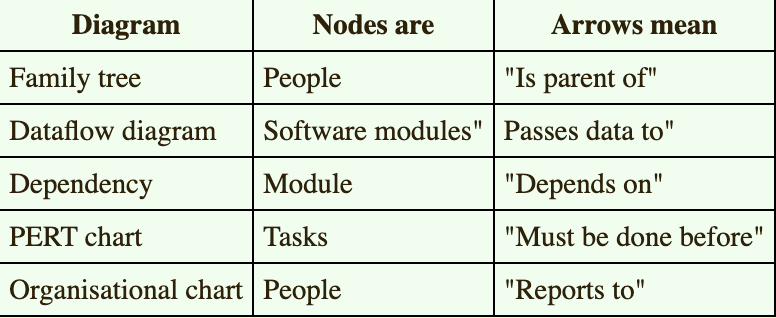
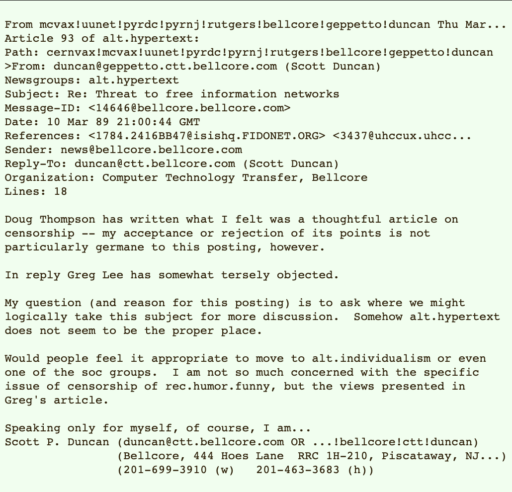
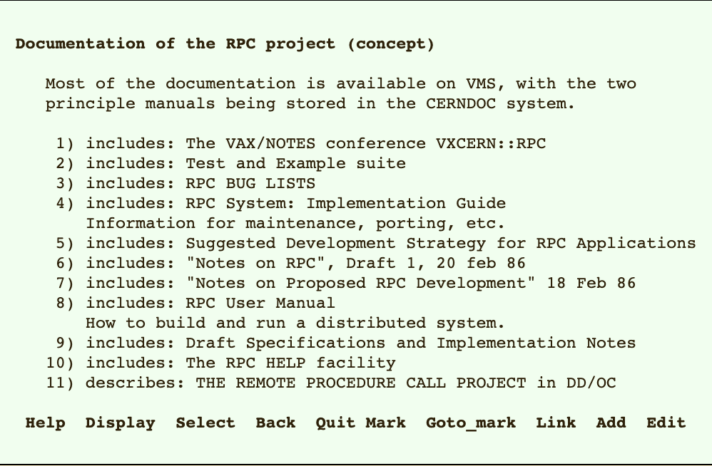
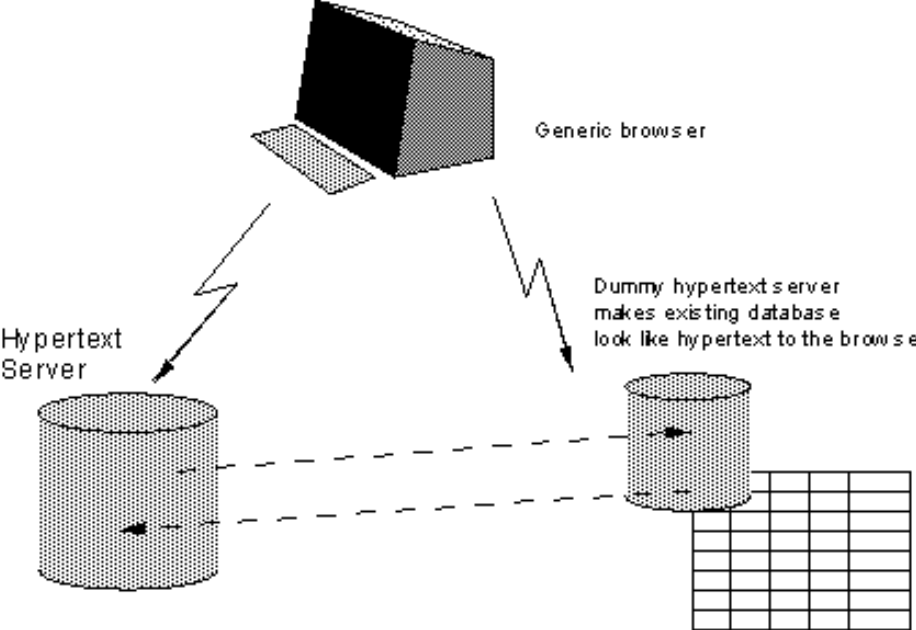

Article Contents
Pick the one of your choosing
Overview
Many of the discussions of the future at CERN and the LHC era end with the question - Yes, but how will we ever keep track of such a large project? This proposal provides an answer to such questions. Firstly, it discusses the problem of information access at CERN. Then, it introduces the idea of linked information systems, and compares them with less flexible ways of finding information.
It then summarises my short experience with non-linear text systems known as hypertext, describes what CERN needs from such a system, and what industry may provide.
Finally, it suggests steps we should take to involve ourselves with hypertext now, so that individually and collectively we may understand what we are creating.

Losing Information at CERN
CERN is a wonderful organisation. It involves several thousand people, many of them very creative, all working toward common goals. Although they are nominally organised into a hierarchical management structure,this does not constrain the way people will communicate, and share information, equipment and software across groups.
The actual observed working structure of the organisation is a multiply connected "web" whose interconnections evolve with time. In this environment, a new person arriving, or someone taking on a new task, is normally given a few hints as to who would be useful people to talk to. Information about what facilities exist and how to find out about them travels in the corridor gossip and occasional newsletters, and the details about what is required to be done spread in a similar way. All things considered, the result is remarkably successful, despite occasional misunderstandings and duplicated effort.
A problem, however, is the high turnover of people. When two years is a typical length of stay, information is constantly being lost. The introduction of the new people demands a fair amount of their time and that of others before they have any idea of what goes on. The technical details of past projects are sometimes lost forever, or only recovered after a detective investigation in an emergency. Often, the information has been recorded, it just cannot be found.
If a CERN experiment were a static once-only development, all the information could be written in a big book. As it is, CERN is constantly changing as new ideas are produced, as new technology becomes available, and in order to get around unforeseen technical problems. When a change is necessary, it normally affects only a small part of the organisation. A local reason arises for changing a part of the experiment or detector. At this point, one has to dig around to find out what other parts and people will be affected. Keeping a book up to date becomes impractical, and the structure of the book needs to be constantly revised.
The sort of information we are discussing answers, for example, questions like:
Where is this module used?
Who wrote this code? Where does he work?
What documents exist about that concept?
Which laboratories are included in that project?
Which systems depend on this device?
What documents refer to this one?
The problems of information loss may be particularly acute at CERN, but in this case (as in certain others), CERN is a model in miniature of the rest of world in a few years time. CERN meets now some problems which the rest of the world will have to face soon. In 10 years, there may be many commercial solutions to the problems above, while today we need something to allow us to continue.
Linked Information Systems
In providing a system for manipulating this sort of information, the hope would be to allow a pool of information to develop which could grow and evolve with the organisation and the projects it describes. For this to be possible, the method of storage must not place its own restraints on the information. This is why a "web" of notes with links (like references) between them is far more useful than a fixed hierarchical system. When describing a complex system, many people resort to diagrams with circles and arrows. Circles and arrows leave one free to describe the interrelationships between things in a way that tables, for example, do not. The system we need is like a diagram of circles and arrows, where circles and arrows can stand for anything.
We can call the circles nodes, and the arrows links. Suppose each node is like a small note, summary article, or comment. I'm not over concerned here with whether it has text or graphics or both. Ideally, it represents or describes one particular person or object.
Examples of nodes can be:
People
Software modules
Groups of people
Projects
Concepts
Documents
Types of hardware
Specific hardware objects
The arrows which links circle A to circle B can mean, for example, that A...
depends on B
is part of B
made B
refers to B
uses B
is an example of B
These circles and arrows, nodes and links, have different significance in various sorts of conventional diagrams:
The system must allow any sort of information to be entered. Another person must be able to find the information, sometimes without knowing what he is looking for. In practice, it is useful for the system to be aware of the generic types of the links between items (dependences, for example), and the types of nodes (people, things, documents..) without imposing any limitations.
The Problem With Trees
Many systems are organised hierarchically. The CERNDOC documentation system is an example, as is the Unix file system, and the VMS/HELP system. A tree has the practical advantage of giving every node a unique name. However, it does not allow the system to model the real world.
For example, in a hierarchical HELP system such as VMS/HELP, one often gets to a leaf on a tree such as:
HELP COMPILER SOURCE_FORMAT PRAGMAS DEFAULTS
only to find a reference to another leaf: "Please see
HELP COMPILER COMMAND OPTIONS DEFAULTS PRAGMAS"
and it is necessary to leave the system and re-enter it. What was needed was a link from one node to another, because in this case the information was not naturally organised into a tree.
Another example of a tree-structured system is the uucp News system (try 'rn' under Unix). This is a hierarchical system of discussions ("newsgroups") each containing articles contributed by many people. It is a very useful method of pooling expertise, but suffers from the inflexibility of a tree.
Typically, a discussion under one newsgroup will develop into a different topic, at which point it ought to be in a different part of the tree. (See Fig 1).
Fig 1. An article in the UUCP News scheme.
The Subject field allows notes on the same topic to be linked together within a "newsgroup". The name of the newsgroup (alt.hypertext) is a hierarchical name. This particular note is expresses a problem with the strict tree structure of the scheme: this discussion is related to several areas. Note that the "References", "From" and "Subject" fields can all be used to generate links.
The Problem With Keywords
Keywords are a common method of accessing data for which one does not have the exact coordinates. The usual problem with keywords, however, is that two people never chose the same keywords. The keywords then become useful only to people who already know the application well.
Practical keyword systems (such as that of VAX/NOTES for example) require keywords to be registered. This is already a step in the right direction. A linked system takes this to the next logical step. Keywords can be nodes which stand for a concept. A keyword node is then no different from any other node. One can link documents, etc., to keywords. One can then find keywords by finding any node to which they are related. In this way, documents on similar topics are indirectly linked, through their key concepts. A keyword search then becomes a search starting from a small number of named nodes, and finding nodes which are close to all of them.
It was for these reasons that I first made a small linked information system, not realising that a term had already been coined for the idea: "hypertext".
A Solution: Hypertext
Personal Experience With Hypertext
In 1980, I wrote a program for keeping track of software with which I was involved in the PS control system. Called Enquire, it allowed one to store snippets of information, and to link related pieces together in any way. To find information, one progressed via the links from one sheet to another, rather like in the old computer game "adventure". I used this for my personal record of people and modules. It was similar to the application Hypercard produced more recently by Apple for the Macintosh.
A difference was that Enquire, although lacking the fancy graphics, ran on a multiuser system, and allowed many people to access the same data.
Fig 2. A screen in an Enquire scheme.
This example is basically a list, so the list of links is more important than the text on the node itself. Note that each link has a type ("includes" for example) and may also have comment associated with it. (The bottom line is a menu bar.)
Soon after my re-arrival at CERN in the DD division, I found that the environment was similar to that in PS, and I missed Enquire. I therefore produced a version for the VMS, and have used it to keep track of projects, people, groups, experiments, software modules and hardware devices with which I have worked. I have found it personally very useful. I have made no effort to make it suitable for general consumption, but have found that a few people have successfully used it to browse through the projects and find out all sorts of things of their own accord.
Hotspots
Meanwhile, several programs have been made exploring these ideas, both commercially and academically. Most of them use "hot spots" in documents, like icons, or highlighted phrases, as sensitive areas. touching a hot spot with a mouse brings up the relevant information, or expands the text on the screen to include it. Imagine, then, the references in this document, all being associated with the network address of the thing to which they referred, so that while reading this document you could skip to them with a click of the mouse.
"Hypertext" is a term coined in the 1950s by Ted Nelson [...], which has become popular for these systems, although it is used to embrace two different ideas. One idea (which is relevant to this problem) is the concept: "Hypertext": Human-readable information linked together in an unconstrained way.
The other idea, which is independent and largely a question of technology and time, is of multimedia documents which include graphics, speech and video. I will not discuss this latter aspect further here, although I will use the word "Hypermedia" to indicate that one is not bound to text.
It has been difficult to assess the effect of a large hypermedia system on an organisation, often because these systems never had seriously large-scale use. For this reason, we require large amounts of existing information should be accessible using any new information management system.
CERN Requirements
To be a practical system in the CERN environment, there are a number of clear practical requirements.
Remote access across networks.
CERN is distributed, and access from remote machines is essential.
Heterogeneity
Access is required to the same data from different types of system (VM/CMS, Macintosh, VAX/VMS, Unix)
Non-Centralisation
Information systems start small and grow. They also start isolated and then merge. A new system must allow existing systems to be linked together without requiring any central control or coordination.
Access to existing data
If we provide access to existing databases as though they were in hypertext form, the system will get off the ground quicker. This is discussed further below.
Private links
One must be able to add one's own private links to and from public information. One must also be able to annotate links, as well as nodes, privately.
Bells and Whistles
Storage of ASCII text, and display on 24x80 screens, is in the short term sufficient, and essential. Addition of graphics would be an optional extra with very much less penetration for the moment.
Data analysis
An intriguing possibility, given a large hypertext database with typed links, is that it allows some degree of automatic analysis. It is possible to search, for example, for anomalies such as undocumented software or divisions which contain no people. It is possible to generate lists of people or devices for other purposes, such as mailing lists of people to be informed of changes. It is also possible to look at the topology of an organisation or a project, and draw conclusions about how it should be managed, and how it could evolve. This is particularly useful when the database becomes very large, and groups of projects, for example, so interwoven as to make it difficult to see the wood for the trees.
In a complex place like CERN, it's not always obvious how to divide people into groups. Imagine making a large three-dimensional model, with people represented by little spheres, and strings between people who have something in common at work.
Now imagine picking up the structure and shaking it, until you make some sense of the tangle: perhaps, you see tightly knit groups in some places, and in some places weak areas of communication spanned by only a few people. Perhaps a linked information system will allow us to see the real structure of the organisation in which we work.
Live links
The data to which a link (or a hot spot) refers may be very static, or it may be temporary. In many cases at CERN information about the state of systems is changing all the time. Hypertext allows documents to be linked into "live" data so that every time the link is followed, the information is retrieved. If one sacrifices portability, it is possible so make following a link fire up a special application, so that diagnostic programs, for example, could be linked directly into the maintenance guide.
Non requirements
Discussions on Hypertext have sometimes tackled the problem of copyright enforcement and data security. These are of secondary importance at CERN, where information exchange is still more important than secrecy. Authorisation and accounting systems for hypertext could conceivably be designed which are very sophisticated, but they are not proposed here.
In cases where reference must be made to data which is in fact protected, existing file protection systems should be sufficient.
Specific Applications
Accessing Existing Data
The system must achieve a critical usefulness early on. Existing hypertext systems have had to justify themselves solely on new data. If, however, there was an existing base of data of personnel, for example, to which new data could be linked, the value of each new piece of data would be greater.
What is required is a gateway program which will map an existing structure onto the hypertext model, and allow limited (perhaps read-only) access to it. This takes the form of a hypertext server written to provide existing information in a form matching the standard interface.
One would not imagine the server actually generating a hypertext database from and existing one: rather, it would generate a hypertext view of an existing database.
The arrows which links circle A to circle B can mean, for example, that A...
depends on B
is part of B
made B
refers to B
uses B
is an example of B
In some cases, writing these servers would mean unscrambling or obtaining details of the existing protocols and/or file formats. It may not be practical to provide the full functionality of the original system through hypertext. In general, it will be more important to allow read access to the general public: it may be that there is a limited number of people who are providing the information, and that they are content to use the existing facilities.
It is sometimes possible to enhance an existing storage system by coding hypertext information in, if one knows that a server will be generating a hypertext representation. In 'news' articles, for example, one could use (in the text) a standard format for a reference to another article. This would be picked out by the hypertext gateway and used to generate a link to that note. This sort of enhancement will allow greater integration between old and new systems.
There will always be a large number of information management systems - we get a lot of added usefulness from being able to cross-link them. However, we will lose out if we try to constrain them, as we will exclude systems and hamper the evolution of hypertext in general.
Conclusion
We should work toward a universal linked information system, in which generality and portability are more important than fancy graphics techniques and complex extra facilities.
The aim would be to allow a place to be found for any information or reference which one felt was important, and a way of finding it afterwards. The result should be sufficiently attractive to use that it the information contained would grow past a critical threshold, so that the usefulness the scheme would in turn encourage its increased use.
The passing of this threshold accelerated by allowing large existing databases to be linked together and with new ones.
A Practical Project
Here I suggest the practical steps to go to in order to find a real solution at CERN. After a preliminary discussion of the requirements listed above, a survey of what is available from industry is obviously required. At this stage, we will be looking for a systems which are future-proof:
portable, or supported on many platforms,
Extendible to new data formats.
We may find that with a little adaptation, pars of the system we need can be combined from various sources: for example, a browser from one source with a database from another. I imagine that two people for 6 to 12 months would be sufficient for this phase of the project.
A second phase would almost certainly involve some programming in order to set up a real system at CERN on many machines. An important part of this, discussed below, is the integration of a hypertext system with existing data, so as to provide a universal system, and to achieve critical usefulness at an early stage.
(... and yes, this would provide an excellent project with which to try our new object oriented programming techniques!) TBL March 1989, May 1990
References
[NEL67]
Nelson, T.H. "Getting it out of our system" in Information Retrieval: A Critical Review", G. Schechter, ed. Thomson Books, Washington D.C., 1967, 191-210
[SMISH88]
Smish, J.B and Weiss, S.F,"An Overview of Hypertext",in Communications of the ACM, July 1988 Vol 31, No. 7,and other articles in the same special "Hypertext" issue.
[CAMP88]
Campbell, B and Goodman, J,"HAM: a general purpose Hypertext Abstract Machine",in Communications of the ACM July 1988 Vol 31, No. 7
[ASKCYN88]
Akscyn, R.M, McCracken, D and Yoder E.A,"KMS: A distributed hypermedia system for managing knowledge in originations", in Communications of the ACM , July 1988 Vol 31, No. 7
[HYP88]
Hypertext on Hypertext, a hypertext version of the special Comms of the ACM edition, is avialble from the ACM for the Macintosh or PC.
[RN]
Under unix, type man rn to find out about the rn command which is used for reading uucp news.
[NOTES]
Under VMS, type HELP NOTES to find out about the VAX/NOTES system
[CERNDOC]
On CERNVM, type FIND DOCFIND for infrmation about how to access the CERNDOC programs.
[NIST90]
J. Moline et. al. (ed.) Proceedings of the Hypertext Standardisation Workshop January 16-18, 1990, National Institute of Standards and Technology, pub. U.S. Dept. of Commerce